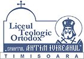

„Sfântul Antim Ivireanul”
În iulie-august 2018...
Liceul Teologic Ortodox „Sfântul Antim Ivireanul” le oferă elevilor...
Dezvoltarea și promovează valorile morale creştin-ortodoxe.
Dezvoltarea şcolii prin diversificarea ofertei educaţionale...
Poze...
Alte Poze...
Vezi lista elevilor admiși pentru anul școlar curent.
Descoperă proiectele și activitățile elevilor.
Liceul Teologic Ortodox „Sfântul Antim Ivireanul” este o unitate de învățământ preuniversitar care promovează valori morale și educație de calitate.
Telefon: +40 356 179 440
Email: ltosfantim@gmail.com
Adresă: Timișoara, România